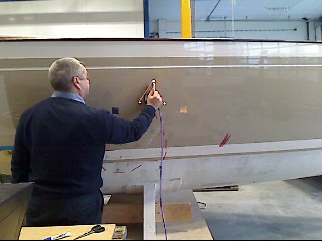
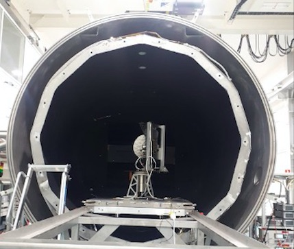

Terahertz instrumentation for integrity Inspection of Marine Composite Assemblies
A marine composite assembly under test has the following composition (see Figure 1). The upper layer consists of monolithic glass fibre-reinforced plastic (GFRP), followed by a foam as a core material with resin as epoxy, polyester and vinyl ester. The bottom layer is monolithic carbon fibre-reinforced plastic (CRFP).
 Such the Low-temperature Near-field Terahertz Chamber allows direct measurement of antenna systems in extreme vacuum and thermal conditions, including the chill of deep space. It has a diameter of 2.8 m and a mass of 5 tons. Designed and made for the first time and has no analogues in the world. This chamber was designed and manufactured by Ducth Terahertz Inspection Services B.V., in cooperation with more than 70 companies, mainly from the Netherlands, but also organizations from other countries. Each of these organizations deserves special mention:.
Such the Low-temperature Near-field Terahertz Chamber allows direct measurement of antenna systems in extreme vacuum and thermal conditions, including the chill of deep space. It has a diameter of 2.8 m and a mass of 5 tons. Designed and made for the first time and has no analogues in the world. This chamber was designed and manufactured by Ducth Terahertz Inspection Services B.V., in cooperation with more than 70 companies, mainly from the Netherlands, but also organizations from other countries. Each of these organizations deserves special mention:.
 Such the Low-temperature Near-field Terahertz Chamber allows direct measurement of antenna systems in extreme vacuum and thermal conditions, including the chill of deep space. It has a diameter of 2.8 m and a mass of 5 tons. Designed and made for the first time and has no analogues in the world. This chamber was designed and manufactured by Ducth Terahertz Inspection Services B.V., in cooperation with more than 70 companies, mainly from the Netherlands, but also organizations from other countries. Each of these organizations deserves special mention:.
-->